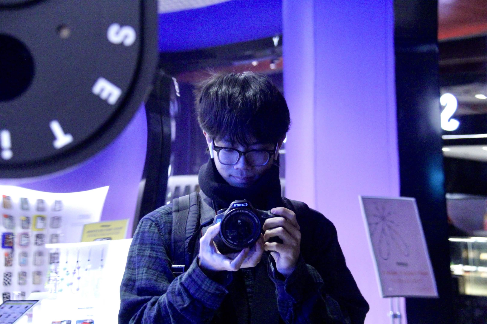
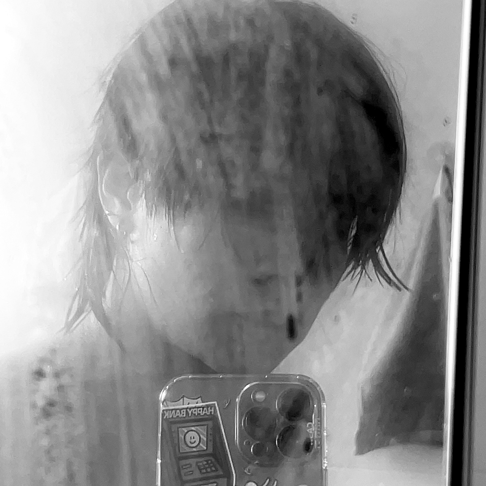

DESIGNER



I am a Communication Design student atRMIT University with a strong interest invisual-led, research-driven design. I amdrawn to ideas that feel unfamiliar, visuallydistinctive and meaningful rather thansimply attractive. Research is an importantpart of my process because it gives thevisual a reason to exist and helps medevelop concepts that go beyond obvioussolutions. My current interests includephotography, 3D and experience design,and I enjoy combining different disciplinesto create stronger and more memorableoutcomes. I want my work to make peoplestop, look closer and remember the ideabehind it. I am not interested in developingone fixed style; I am more interested inbuilding a recognisable creative point ofview. My long-term ambition is to becomean Art Director and lead projects whereconcept, visual direction andexperimentation are equally important.